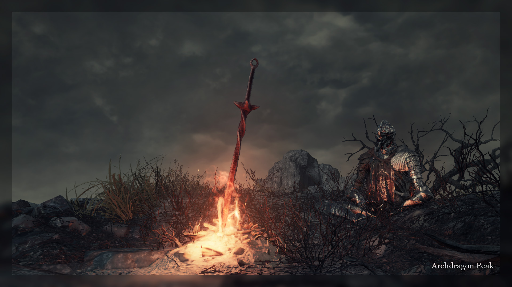

An hour before 4pm GMT, the countdown began. Our excitement was no doubt rising for we were now keenly aware that yesterday’s nine hour event was just a third of everything we would see.
As the countown reached zero, poem #155 announced the Puppet’s awakening. Half a day of rest was, apparently, neither calm nor soothing to the mute knight. It went on “unfeeling” from its “exhausting” slumber, likely plagued by the resurfacing memories of puppets popping in and out of its mind. It may also be alluding to the Puppeteer’s real-life state, as the event had (and would) undoubtedly take a toll on his immediate well-being.
Seeing how the Puppet was resting inside Wolnir’s tomb, where yesterday it fought off the last waves of invaders, we were expecting it to proceed to Irithyll. The Puppeteer, however, chose a different route—to descend deeper down, into the Smouldering Lake.
The Puppet quickly traversed the long stretches of lukewarm water, and came down into the Demon Ruins. We were to search for it in this ancient maze riddled with half-dead hell-spawns. The Mad King’s weapon art would sometimes be heard echoing somewhere near the Puppet, which only added to the atmosphere.
Unlike many areas before it, we faced the regular Puppet the first time we found it: using only its familiar Arstor’s Spear and Drakeblood Greatsword. This was the state in which Fanboy, who was one of the first ones to get a fight, found the knight.
The apparent normality would soon be broken—#156 warned us. The Puppet was carefully constructed by the Father, its core made of the Humanity’s cold flame and the Lord Soul “entwined into the formless grey” (#128). Yet inside that synthetic mixtures lay all the dead and broken puppets we faced in the span of the last five months. Lone Darkwraith’s apparition emerged in the Cathedral of the Deep, Redflame Erik’s mirage in Farron Keep, and what could be described as Soul of Cinders’ intrusive presence in the Catacombs. There was just one puppet previously seen in the Smouldering Lake—Wraithflame Erik.
A curious side-note: #156 sheds some more light on Wraithflame’s state. Whatever was left of it, it was “engulfed in wrath”. We can theorize that it was just as enraged about its poor fate during its only event at the end of January (which, if you need a refresher, is described in chapter four: Ashes and Stitches). The poem also pokes fun at the Father with the last line: “Whose cruel hand sealed such a fate?”. As we’ve seen throughout the story, the Father is far from being a good man. He is not perfectly evil either, rather a neutral character steadily pursuing his goal, and capable of using even malicious methods to get closer to it. Even if it meant condemning two living beings to go out as a sorry amalgamation.
Fitting with the Twitch background which hasn’t yet been mentioned, the first recorded clip of the mute knight using Wraithflame Erik’s weapons is set right where the sandworm dies. For the sake of storytelling we may imagine that the Puppet had just murdered the beast and descended into the ruins again, only to return back when pursuing Fanboy.
Surviving the encounter and venturing onwards, the Puppet was overcome by Wraithflame’s apparition. It solidified itself in the knight’s husk, as poem #157 once more reinforced our understanding of what Wraithflame was—an ireful conglomeration of two human souls forced to coexist in a single “cage of flesh and skin”.
It, though nothing but a vague recollection, could rage on as a brief spark. As the poem was sent, the summoning limits were turned off, and up to five eager invaders could challenge it at once. With more foes to face, the Puppet became more dangerous as well. Aggressive use of Power Within made its attacks devastating. This was especially true of its spear, which seemingly benefited from a hidden Leo Ring effect, for its counter-damage was horrifying.
Despite having the tools to quickly dispatch single targets, the thing found it difficult to win against our constant stream of foes. Unsurprisingly, it fell back to more reactive strategies, showing some impressive evasive skills as its health reached the critical point.
(And of course, sometimes we, by a random stroke of bad luck, did not get into the Puppet’s world—but in each-other’s worlds instead. This was of course a time of reflection on camaraderie and friendship. But what was much more engaging—a time of beating each-other into bloody pulps.)
We were awfully deep in the ruins, down below the ruinous remains of Ash Lake. The Puppet, awoken from its half-day slumber and revitalized by constant combat, was ravenous. It must have greatly craved our souls, for in poem #158 the Puppet had temporarily threw down what control it had of its hunger.
Having gone through the deepest chambers of Demon Ruins and having consumed all that was still relatively alive within, the mute knight awaited us in place of the Old Demon King.
Recall what happened with the apparitions of the previous puppets the previous day. They shone the brightest during these boss encounters, when the Puppet was slowly consuming them for good. This could also be the reason why we never saw the Puppet’s main arsenal expanding, despite it having being overcome by three apparitions by now. After the boss encounter, the Puppet rids itself of the current apparition completely and ultimately, devouring whatever surfaced on its empty mind as we fought it in the area. And after that, nothing is left but more void to fill with souls, as the knight’s hunger gnaws ever stronger.
The boss of the Smouldering Lake, fitting the high-tempo music score, came at us with all guns blazing. Aggressive Power Within use in combination with a buffed Firelink Greatsword made for fast-paced combat where both sides could heavily punish any mistakes the opponent had made.
The fights were fast, and the opponents were plentiful. A peculiar event happened at one point: not one, but two opponents were challenged by the Puppet at once, (Errel and Fanboy). Nevertheless, as the Puppet was close to finishing its feast, the time came to move forth. #159 told of the final moments of Wraithflame’s image: a feeble spark smothered by the unending flow of souls.
Here came another unique moment that would begin the Puppeteer’s continuous breaking of character. Several of us asked for one more fight for an invade who couldn’t get in on the action. With a short "Very well." they were brought in, and the boss-fight extended slightly.
—80—
Down in the scalding depths, Wraithflame’s hateful apparition was subdued by the Puppet. Having made that little detour, it was ready to ascend back through the Catacombs, its mind a little less crowded with fragmented minds.
Passing Wolnir’s chamber undisturbed by us, the mute knight quickly made its way to Irithyll of the Boreal Valley.

After this momentary silence, the Puppet was yet again assaulted by a vague mirage of some distant soul. This time—a cowardly meek image of White Vagrant, as #160 was quick to tell. Before we move on in the story, this poem should be given a closer look, for it speaks about the Vagrant. And because the Vagrant was one of the first puppets to “die”, it’s also fairly starved for lore.
We can assume that this poem, as well as virtually every other one sent during this event, is the Father speaking to us. #160 presents us with four bits of information, aligned elegantly with each line. The first line tells us that White Vagrant did originate in Irithyll, but eventually left it despite being “frail” and “scared”. We can say with a fair bit of certainty that the Vagrant is not human—but a stranded white phantom. Therefore this line may be interpreted as the White Vagrant leaving its world, not necessarily Irithyll within it.
The second line extends on this idea, saying that the Father played a role in Vagrant’s leaving. Was he the one that separated the phantom’s link to its original world? Did he manipulate the Vagrant to sever that link himself, seeing as he left “entwined in Father’s strings”? We do not know, but it’s clear that the Father intended the Vagrant to be stranded between worlds.
The third line reaffirms our belief that Father did not think highly of Vagrant’s resolve and will. This may be precisely why it fell into Father’s trap and became a vagrant.
The last line is perhaps the most interesting. Why would the Father need such a weak-willed cowardly puppet, if their primary purpose was to fight? Well, this line single-handedly links White Vagrant to the “ancient sun”. And what could be that sun? The old gods of Lordran, and Gwyn. (Though as we will learn just a bit later from #165, it’s more likely that it alludes to Gwynevere, not Gwyn). This link is extremely important for Oden, because it gives us the answer as to why merging him with the Vagrant’s remains catalyzed the return of his memories as the Lord of Hail.
Why would the Vagrant be linked to the gods? Well, our best bet is to look at the irithyllian face preset in the character creation menu.
The features of the old gods, as if from legend. They say children born like this are fated to be taken to the Boreal Valley.
So while it’s going a bit out there in terms of whether it could have been thought-through by the Puppeteer himself, this does gives us a pretty solid footing for the Vagrant’s origin: it was born a distant descendant of the gods, and because of that it was at some point brought to Irithyll, from which it was then lead astray by the Father.
Moving on from such narrow lore details, the Puppet crossed the bridge and entered Irithyll. Immediately, it has gifted us a fantastic showcase of PvE skills, only to be promptly dispatched by Narcolept for such an extraordinary display:
The first Twitch image has show Vagrant’s growing influence on the synthetic knight. The exact moments are unclear, but it has gradually acquired Vagrant’s weapons as it progressed through the area. If we were to tie it to some landmarks in the area, it likely went like this: Pontiff Knight’s Curved Sword appeared around the very start, and the Murakumo somewhere in the middle of the area.
(Lots of Fanboy's footage was corrupted during this session, but he did a great job at restoring it so we still see all the important bits)
The Puppet made quick and steady progress through Irithyll’s winding streets, fighting off lonely invaders and sometimes letting several people in at once. One such battle happened right before the lake, with the Puppet (unsuccessfully) fending off three invaders at once:
As it inevitably got back and pressed on, it came across a single lonely room warmed by a fireplace. The stream’s background changed, and poem #161 was sent.
This poem confirms in a straight manner, that the room where you’d find Siegward in the main game is the Father’s “shack”, where he worked on the Puppet and, probably, also where he tended to all of his marionettes. The second half of #161 likely refers to the Father transporting the Puppet out from this shack to the High Wall of Lothric, where it has awoken. And the “Divine” would be either the Soul of Cinders—the Puppet’s ultimate goal, or the Lords of Cinders—the foes it had to overcome along the way.
Nearing Pontiff, the Puppet was ruthless and eager to not linger around any more. It’s also around here that we saw an interesting pattern: the Puppet not only consumed souls and grew stronger statistically, but also seemingly learned and used our fighting styles as well! What prompted this idea was the aggressive use of Murakumo’s jumping attacks—a remarkable feature of Kallah’s playstyle. Another example of such “learned behavior” would be Narcolept’s tendency to redirect charged R2 attacks depending on the situation. Perhaps the Puppeteer intended this details, perhaps it was simply a coincidence of similar playstyles. Either way, last fights were fought, last souls collected. Now came another boss-fight for us.

#162 beckoned us to the fog gate. Alongside that, we have learned that White Vagrant’s apparition was more feeble than the other ones. This is why it’s also the first boss-fight which did not mirror the area’s respective puppet completely. The “Vagrant” in Puppet’s flesh used its proper weapons, only this time they were also augmented with frostbite—a buff the original Vagrant never possessed.
This fight had proven brutal for a lot of us. Murakumo was already doing massive damage, and it was made only deadlier by the constant danger of frostbite hanging over us. Combine those statistical dangers with the Puppet’s in-your-face playstyle, and it became an awfully dangerous opponent.
Another thing that was special about this particular boss-fight is that it had two stages. In the first one, the challengers faced the mute knight on the lower level of Pontiff’s Cathedral—a wide, open area with lots of space to maneuver. But about halfway through the fights, the Puppet would force a break and ride the elevator up to the second floor. There, it would face us again, this time in a much more narrow space where both sides could potentially be forced into a corner.
As we, in the regular fashion, each got a fight or two against the Vagrant’s apparition, poem #163 quickly announced the end of the fight. White Vagrant’s last remaining memory was smothered and consumed by the Puppet just as quickly as its body was decimated by us several months ago. Now, in the temporary respite of an empty mind, the Puppet would ascend up to the derelict asylum of the gods—Anor Londo.
—93—
Anyone who has dabbled with DS3’s PvP will know that the small transition area post-Pontiff is (or was during the game's activity) one of the most active places to encounter people at the “meta” levels (around SL120). The Puppet was at SL90, as were most of us, but it was still expected that we would run into random hosts and invaders here. This must have been the Puppeteer’s reasoning, because the “gank city”, as it is colloquially called, was skipped altogether. Instead, the stream immediately lit up with a new image:
Artorias’ Greatshield and frost-buffed Zweihander? The derelict cathedral of the gods was Slumbering Oden’s domain. Although what we actually encountered within the cathedral differed slightly from the Twitch background. Near the very beginning of the area, when presumably Slumbering Oden’s apparition was at the weakest, the Puppet used its generic setup, with Arstor’s Spear in the main hand accompanied by an off-hand Drakeblood Greatsword.
As the mute knight passed the dead blacksmith giant and plunged deeper into the cathedral, it brought out the Greatshield. Drakeblood became a secondary main-hand weapon, and at last we saw the setup we would be facing for the remainder of the area.
#164 brought us back to Oden’s story. This poem seemingly describes some time the Father and Oden visited Anor Londo, perhaps after his reawakening as Lord of Hail. We are sure that the first half of the poem is Oden’s speech since it’s both italicized as well as written in the pseudo-archaic English.
Was Oden content with seeing the remains of Gwyn’s rule degenerate into ruins? The poem does not associate any emotions with old lord’s phrase, but it does seem that he spoke a fair bit about it afterwards. What he and the Father would go on to discuss we will never know, since this moment is never brought up again, but we could theorize that it’s related to the Father’s plan of overthrowing the Soul of Cinders and ushering the Age of Dark.
Anor Londo was cleared out with great haste, which is unsurprising—it is one of the smallest areas in the game, perhaps even smaller than the Profaned Capital. Because of that, it got only two Twitch backgrounds, and just one in-area poem.
The Puppet, having fed on everything still alive in the rotting dark of the cathedral, was ready to move out. This place was of great importance to it—the second Lord of Cinders, Aldrich, was here. Yet the mute knight was succumbing more and more to Slumbering Oden’s strong presence. It could not challenge the Lord of Cinders in this state, quite literally beginning to sleep-walk as it went on. First, the Puppet would have to smother the apparition.
Poem #165 instructed us to bring the Red Soapstones out again. But, in what felt like a surprising twist at the moment, we were to write the signs not near Aldrich’s boss fog, but deep below the cathedral, in the Darkmoon Tomb.
This poem also gave us just one more bit of information on Slumbering Oden: “Infused with image of old Mother”. Oden was infused with White Vagrant’s remains, who as we have learned during the Puppet’s march through Irithyll, was linked to the old gods. The “Mother” is capitalized, which does seem to invoke the idea that it was just one specific deity we must about. And what female deity was a patron of life/fertility? The best apparent connection is Gwynevere.
Next curious detail is that Slumbering Oden “slept deep as half-dead dragon sage”. In the base game, we see followers of the now non-existent Dragon covenant meditating in their special pose for so long they sometimes even turn to stone. May Oden’s slumber have been something similar?
The Puppet, surely eager to void its mind of Oden’s resurfacing memories, awaited us atop the tomb. During our post-story discussions of the story, several people highlighted that this boss-fight stood out because of its very slow tempo, which was only augmented by Alex Roe’s eerie and calm music. This can be seen quite well in the only surviving clip of the boss-fight: the Puppet’s usual ruthless strategy of being “in your face” and not letting the opponent breathe is absent. Instead, it waits for its opponent’s moves, retaliating and reacting instead of aggressively attacking.
Around the middle of the fight, Slumbering Oden’s Zweihander would be swapped for frost-buffed Partizan, which proved to be maybe even more devastating than the ultra greatsword. Its fast pokes and slow poise-supplemented swipes already make it a good weapon to use against other people, and it was only enhanced by the hefty frostbuff.
The Zweihander deserves a sentence or two as well. It has an interesting property with the Neck Swipe and Slash Spin weapon arts: it threw people away while also knocking them down.
The slow fights went by quickly, and Slumbering Oden’s apparition was overcome. With #166, the last opponent was called in. With the Puppet’s mind once again clear and empty, it was time to devour the Lord.
Though it doesn’t change anything in the grand scheme of things, it’s interesting that the last line says that the Puppet was to “strangle” a poor thing. Who is it referring to? It’s likely talking about Gwyndolin—or what remained of him. The Puppet had no reason to show compassion or kindness to the half-dead god, (and judging by its artificial mind, it likely didn’t even know any of those feelings). So why would it not consume the poor god of Dark Sun along with the Lord of Cinders?
With Anor Londo behind us, we have reached the standard 30-minute toilet break that the Puppeteer probably needed much more than we did. #167, which announced it, said that the Puppet’s way of dealing with the Lords was grisly, messy. For the sake of the story let’s say that the mute knight spent these thirty minutes ripping Aldrich apart and consuming all that was worth consuming.
—103—
Thirty minutes have passed, and the Puppet overpowered the god-eating priest. Poem #168 had given us the resolution of the encounter. The fights were over, the time came for the feast. In the transient lucidity of the mind, the Puppet had consumed the second Lord of Cinders.
The mute knight descended from the derelict cathedral of the gods, backtracked through the empty streets of Irithyll, and plunged even deeper, into the dungeon. Here, the Lord of Cinder’s soul had begun taking its roots.
Just as #151, #152, and #153—which were sent in the Catacombs, right after the consumption of Abyss Watchers—all the poems sent in Irithyll Dungeon were emboldened, showing that the knight was under Great Sin’s influence.
We eagerly trailed the thing, and Fanboy was the first to stumble upon its world. The Sin’s influence was similar to what we saw deep in the Catacombs, only this time—stronger. The Puppet’s main weapon shone with the same malignant fire, but now any hit that grazed us would briefly set our characters aflame. The effect was purely cosmetic, although it is possible that the Puppet’s damage was also augmented.
Great Old Sin’s influence did not stop at just coating the weapons in special fire. The Puppet now possessed a pyromancy flame with two custom spells: Floating Chaos with Way of White’s Corona animation, its main purpose being crowd control and breaking our offense; and a huge explosion with Sacred Flame’s wind-up. (A momentary note: the same explosion was used for the Nameless Flame’s ground pound).
The Puppet had struggled through the area, partly because the summoning limits were frequently turned off and it was almost always facing several foes at once. But the Jailers were the thing that posed the most thread to the voiceless knight. Their health drain decimate the poor Puppet’s enormous health pool. It was not uncommon to see thousands of its hit points vanish in mere seconds. And worst of all—the mute knight had no good way of regaining that lost health. The only thing it could do is crush the golden souls and hope that the regeneration effect they provided would be enough.
For the sake of the story, the Puppet’s wavering performance could be tied to it struggling with Great Old Sin’s flame, which if we recall the poems from the Catacombs (#151, #152, #153), seems to have been momentarily debilitating for the knight.
We fought it off well, but, as always, the Puppet kept coming back. It slowly crept its way through the area. Somewhere in the middle, #169 was sent, shining some light on the transformations that were going on within the Puppet.
The first half of the poem likely refers to the Puppet’s advancement through the Dungeon, for in the Catacombs it was described as “howling” from Sin’s intrusive flame. Soul of Cinders is presented to be a lot more powerful in the Puppeteer’s lore than it is in the actual game, so it isn’t a far fetched idea that the souls of Lords of Cinders, which are by definition linked to the Soul of Cinders, would be orders of magnitude more potent than any other soul which could be found in the world. And so would their effects—"scorching soul and flesh alike".
#169’s second half is more interesting: it talks of the Father’s personal view on the issue. The Puppet has now consumed two of these magnificent souls, its very living core suffering from their influence, incapable yet of controlling it. They, vestiges of the “oldest hells”, are fundamentally reconstructing the Puppet’s formless gray soul, imbuing it and altering it into something different. Something the Father had a strong distaste of: a soul akin to the hellish amalgamation that fuels the Great Old Sin itself.
As the Puppet fought on through the dungeon, and reached the crumbled dragon monk overlooking Archdragon Peak, #170 has confirmed our suspicions. The Puppet’s only realistic way of overpowering Great Old Sin was to “become as it”, per the last line of #150. Its fate was to keep marching on, consuming all the living things it would encounter along the way, gulping down any Lords of Cinders still left in the world, until there was nothing more to consume. Then, and only then, would it face the Great Old Sin to either fall as its victim and let the Father’s plan crumble into dust, or overpower it and sever its rotten presence from the world.
It is also important to note that poem #170 had the “1 LEFT” at the end of it, which was usually reserved for ending boss encounters. Irithyll dungeon was unique in that it had no such boss encounter—likely because the area itself had no boss. That is unless you count the Profaned Capital to be an extension of the Dungeon, but, as you will see at the start of the next day, the Puppeteer clearly didn’t.
With one last kill under the Puppet’s belt, no one remained in the mute knight’s world. Alone, it subdued the scorching heat of Aldrich’s Lord Soul. Then, left completely alone in the blackness of the night, it sat. It sat, and slept. And as countless dragon sages, it dreamt of the fabled Peak.
—108—
The Puppet had awoken, finding itself at the base of the great citadel, gusts of wind defending it from all outer realms. We followed it.
This area would become the crowning one for the second third of the finale, and also quite possibly the single longest area of the whole run, spanning two hours of gameplay and four distinct background images for the Twitch stream. This could be tied to the fact that Lord of Hail (whose apparition we were about to witness) was killed off quite quickly by the Puppeteer, having been seen for just two events (which were described in chapters X. Spark of Yore and XIV. Sparks and Corpses). But, more likely, this was just a random natural coincidence, since the area itself is fairly long in the game.
Lord of Hail, from the three states of Oden we saw throughout the story, is undoubtedly the most important one for the Puppet. As poem #173 would let us know in the near future, his apparition was the most potent of all we saw so far. But let’s not jump the horse yet: the area began with #171.
Anor Londo’s first poem (#164) gave a slight hint on the events that took place between Slumbering Oden’s reawakening and Lord of Hail’s first appearance. Poem #171 gives more lore on Oden, but does so without a precise time-frame. The first two lines even say that his life began so indescribably long ago, it can’t even be said to have a beginning.
The latter half, as is frequently the case with the Puppeteer’s poems, is more interesting that the former. We are keenly aware of what the Puppet seeks: it seeks to overpower the Great Old Sin and sever its link to the world. The latter half very clearly states that this goal is the same as Oden’s, which agrees with everything we know about the derelict god of antiquity.
But the most intriguing is the last line: “yet couldn’t get, too weak of heart”. Oden was built up a reserved and wise character, much like the Father in his stern distaste of the Fire. From the poems sent during his long slumber (particularly #51, #58, #60), we have learned that he also was not afraid of getting into bloody confrontations for the sake of his beliefs. #58 and #60 in particular, referring almost certainly to his first and only confrontations with the Heart of Spears, give an idea that he would go so far as to openly oppose the gods at some point, likely trying to wake or even kill Filianore in the Ringed City. And later on, as the transient spark that was the Lord of Hail, #77 and #83 show that he was completely aware and in agreement with his impending doom, for he knew it would bring a chance to achieve what he long sought.
So, with such strong beliefs and wills to back them up, why was he “weak of heart”? Do not forget from whose perspective the poems are written. It is not some uninvolved outside observer—but the Father. The Father, whose ideology was very much in tune with Oden’s.
This provides us with a curious juxtaposition: the Father and Oden shared if not the same, then at least very similar goals. But the means with which they pursued them differed wildly. We cannot judge Oden’s choice of means very precisely, for in the present we only saw him as a puppet under the Father’s guidance. Yet from all the little bits and pieces of his lore, it seems that he was a valiant man, and opposed the gods of Lordran head-first. He fought straight through the Ringed City and, ultimately, overpowered Heart of Spears after a week of arduous combat. Yet he fell short of his target, and was likely stripped of his divine status and exiled from Lordran only to be slowly degraded into a vagabond hollow we come to know as Oden the Armless.
Oden’s mind was dark, but his methods were not. Although there is not much to back such a theory up, it appears that it is this sort of straight-forward “nobility” of his methods that Father had deemed a “weakness of heart”. The Father, as we saw from the very beginning and until the very end, while pursuing the same goal, used much more decadent and brutal methods. Reanimating hollow beings or leading those still living astray into his web of strings, all to be used as cannon fodder. And when that cannon fodder was destroyed, the Father stitched the remains together and sent them out again. And again. And again. And after that horrible cycle brought him all the precious souls and corpses he needed, he stitched them one last time into a lifeless Puppet—a blank hollow soldier with a singular goal. Oden waged the war against the gods by himself. Father waged the same war by using (and abusing) other creatures.
But, coming back from the theories to the realities of the Puppet’s journey, we faced Lord of Hail’s apparition in nearly full force right from the start. The Drakeblood Greatsword remained in mute knight’s off-hand, now being at its rightful place as Lord of Hail’s off-hand. It was accompanied by Oden’s Astora Greatsword and Storm-based spells.
Contrasting Irithyll Dungeon, where the Puppet was surprisingly underpowered, this apparition has proven to be one of the scariest. Perhaps because the Puppeteer has hit that “flow” state in real life, or perhaps because the weapon setup was more fitting the Puppet’s bold playstyle. Astora Greatsword in particular has allowed it to force its way through many of our attacks, which he would frequently tank regardless of what weapon was in its hand.
Having consumed several of our souls in the rocky prelude of the citadel, it quickly disposed of the wyvern and ascended into the Mausoleum.
Here we saw a small addition to its already scary arsenal: the ultra greatsword has gained a Spin Slash, much like what Slumbering Oden had used. It was used sparingly, for its quick animation paired with knockdown and decent damage made it devastating.
As the Puppet strode through the Mausoleum, poem #172 spoke not of Oden, but of the Puppet. All of us had been trailing the mute knight on its great journey. And we saw its evolution from a meek, defenseless thing with a broken sword all the way to a ruthless being on its way to kill a deity.
Its journey was not only one of consuming souls from outside, but also smothering all the entities that composed it from within. All the way back from the Cathedral of the Deep, the Puppet had been nigh constantly bombarded by many past puppets, surfacing from its chaotic mind. And it overcame each and every one of them, on a steady path to void its mind of absolutely everything.
The synthetic thing marched on through the mausoleum and reached its peak—the Great Belfry. A thought was echoed that the Puppet had grown stronger still, and the recordings from this time seem to agree. Just take a look at this:
It took three experienced invaders upwards of six minutes of constant combat with the single target to break it down, with the Puppet surviving on low health for a fair while. Granted, the Puppeteer did not make any single person his target and was unable to kill any of the three. But it’s likely that man behind the controller was enjoying the calamity of fighting so many tough opponents.
Several climactic fights were held in the Great Belfry in very much the same style as Lord of Hail’s events. But, as the time ticked on, the time of the area came to an end. Having had almost one and a half hours to see just how dangerous this apparition was, we were now to face it one-on-one.
Lord of Hail’s apparition was deemed one of the best boss-fights of the entire event. The Puppeteer was playing well, the Puppet’s arsenal was varied enough to make the fight interesting, and the area was atmospheric. Not to mention, Oden’s signature warping and the Puppet’s willingness to use several regeneration souls made the fights exhausting.
Poem #173 opened the boss-fight, and #174 closed it. And although they are mostly “generic” poems that don’t speak about anything in particular, there are still a couple of points to consider.
First of all, although it has been already touched upon in the earlier chapters, “adept of storm” once again indicated that the Lord of Hail was a god of nature. More precisely, of storms and rains. This is only tangentially related to the story, but Ensign has noted that it’s fairly fitting for Oden’s affinity for the dark. Or, rather, it does not go against said affinity. As we know, many gods of Gwyn’s pantheon are directly linked to light, sun, or lightning. Oden was a god coming from the same age, but was neither a part of the same pantheon nor dependent of the light or fire for his powers.
There is one more interesting detail to think about. When we first learned of Heart of Spear’s downfall induced by Oden (which, at the time, we had no idea was Oden), he was called a “titan Lord of Thunder”. But coming back from his slumber, Oden’s title changed to “Lord of Hail”. If thunder was at least tangentially related to lightning, hail is not. If anything, it’s even closer to winter and cold than to lightning or sunlight. May have his long exile and growing affinity for the dark changed that which he was associated with as a deity? Much like when Gwyn was initially known as Lord of Sunlight, later becoming a Lord of Cinders after his self-sacrifice to the First Flame.
(The last paragraph is pure speculations, there is not a lot of concrete evidence to back it up).
After everyone challenged the Puppet once or twice, the event came to a conclusion. Day two has extended for about the same time as the first one—nine hours of playtime, with many of us jumping in and out of it as it went on. The closing poem #175 was sent, reiterating the Puppet’s stoical nature.
—120—